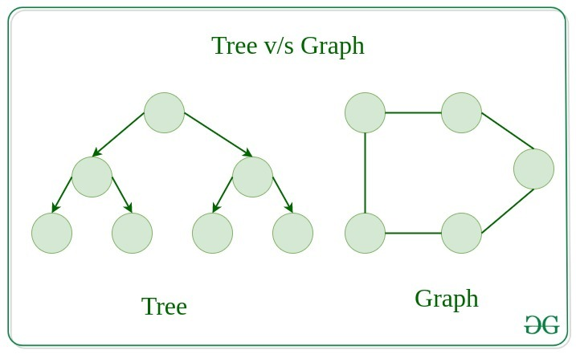
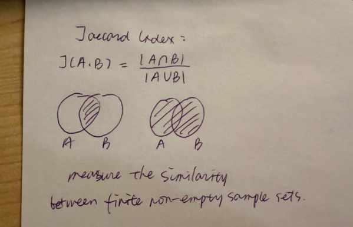
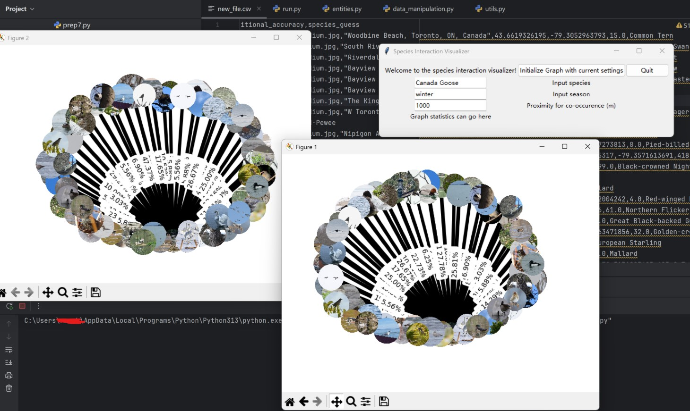

Bird Interactions in 2025 (Toronto)
Eleanor Neal, Nabiha Tariq, Ruoshui Deng
*****
March 2026
 Final Product
Final Product
Overview
In this project, we model interactions of bird species in Toronto, 2025 and predict how likely they are to
interact based on this data using real-world bird observation data from iNaturalist. Since the dataset includes precise geographic coordinates for each observation, it allows us to
model proximity-based interactions between species and examine how these relationships vary across
seasons 🦆.
The goal for this project is to better understand patterns of species co-occurrence and interaction within an ecosystem. Studying these relationships can provide insight into how ecosystems respond
to environmental changes, specifically weather/season 🐾.
Origin
This project was the result of our biggest CSC111 assignment. After spending the entire year learning various data structures and algorithms in Python, we finally had the opportunity to apply everything we learned to a real-world problem of our choice 📰.
For the first time, we were completely on our own; no starter code, no step-by-step instructions. Just guidelines: identify a meaningful problem, find a dataset, and develop a solution using concepts we learned throughout the year.
However, there was one constraint: we had to use trees and/or graphs to represent some core part of our project 📃.
Now trees are used to represent hierarchical, branching, or recursively nested data like categorizations of animals, or the moves in a single-player or multi-player game. Graphs, on the other hand, represent networks of data, like users and relationships on a social media platform or geographic and spatial networks.

Courtesy of GeeksforGeeksAll of us had a shared interest in how graphs are used to analyze complex systems, eg. transportation networks, social networks, e.t.c. And so after a little debate, we decided to go with modelling an ecological system 🏞.
Development
**Story Time**; if you'd like to skip to the technical details, feel free to scroll down to .
Originally, we planned on modeling the seasonal interactions for all animals across multiple years and locations, where users could choose location, species, and speason.
This would help users detect seasonal patterns of species interactions, and hopefully uncover some interesting insights about the ecosystem.
So we choose iNaturalist, a platform that allow users to users upload sightings of any animal they spot (excluding humans 🤓), along with other information such as observation dates, species names, geographic coordinates (latitude and longitude), and associated metadata.
iNaturalist catalogues these observations and shares them with data repositories in a clean format, which made it a great source for our project.
So we downloaded the HUGE datasets, with about 299,705,908 lines of data 🤯. It had a lot of information, but how would we use it?
How would we know what we needed, and really just how would our program work? Thus began our quest of mapping out our program,
and while I have no pictures of us in the study room on the 11th floor of Robarts, it was quite a sight. I know not
how many papers we wasted that day, but eventually we decided it would work like this: 📜
A custom ’Graph’ class (weighted, undirected), where each vertex represents a species and edges represent the likelihood of interaction between two species. The overall architecture of the program can be divided into four main stages:
- Data preprocessing: The raw CSV dataset is cleaned and filtered to remove irrelevant attributes.
- Data transformation: The cleaned data is converted into a collection of Observation objects, where each object holds all observations of a single species. Each observation organizes its data by season. i.e, all observations fall in either SUMMER, WINTER, SPRING, or AUTUMN
- Graph construction: Using these Observation objects, the program constructs four separate graphs (one per season): Species are added as vertices, and edges are created by comparing all pairs of species, and determining whether they co-occur within a specified geographic threshold.
- Visualization and interaction: ??? (we decided to leave this till the end)
So we started off with the first stage, data preprocessing. It didn't take too long, and didn't take up a lot of code either.
A large task completed effeciently; we were on a roll.
Hah, I thought, either we're just geniuses 😎, or developers really make things seem harder than they are.
Boy was I wrong. Right in the second stage, where we programmed an algorithm to clean the data and transform it to Observation objects, we realized our original plan was just a wee bit too ambitious.
Okay, maybe not a wee bit 🙃, but a lot. With almost 3 million lines of data to process, it would take forever. Like literally.
So we decided to narrow our scope to just one year (2025) and one location (Toronto), which reduced the dataset to a more manageable size, and allowed it to run much faster too.
Then came the third stage. This was the second-longest stage, as we had to figure out ways to determine interaction likelihood, as well as implement the graph structure 😫.
So we started off basic: Seperate data into 4 seperate graphs, one vertex for each species, and edges between for interaction.
Well, easier said than done of course. How would we determine interaction?
So we found two statistical methods to back our work: The Haversine formula, and the Jaccard Index. So in each seasonal graph:
- Each observation would be compared to every other one.
- And for each pair, the geographic distance in between would be caclulated using the Haversine distance formula.
- If two observations fall within a proximity threshold of 1.0 kilometre, this would be treated as a potential interaction, and therefore recorded in the graph by adding an edge between the corresponding species.
- Since two species may interact more than once (i.e. there may be more than one edge between species), edges in the graph are weighted: each time two species meet the proximity threshold, the weight of the edge between them is incremented.
- Using the raw number of co-occurrences, the interaction probability is calculated using the Jaccard Index.

Ruoshui's Work :)
Now came the final stage: visualizing the graph. This took the longest time, not only due to the complexity of visualization, but also because this was also the first time
we were able to see the results of our graph construction 👀. Until this point, things had been highly theoretical, and we had no way of knowing whether our program was working or not.
So we set up a basic structure using NetworkX - rendered with Matplotlib - and when we finally saw our graph, it was a mess.
With so many species and interactions, the graph was too large and cluttered to be useful. So we had to get creative. We decided to extract a portion of the graph centered on the species selected by the user (max 50 nodes), and filter out
interactions with less that 2% probability of interaction. This way, users could still explore the interactions of their chosen species without being overwhelmed by the full graph.

Early stages of graph visualization
Then we faced other problems, like missing data for certain species, zero errors in calculation, weighted edge not showing, e.t.c. It took a lot of debugging and tweaking, but eventually we got it to work.
There were times our entire program would stop working only for one wrong line of code 😵.
The last thing added was interactivity. We added a hover over feature (see first image) to lessen the clutter and make the graph easier to read.
We also made a dropdown menu for users to choose species, with a searchable feature. Baisically:
- Visualization and interaction: The user is first prompted to select a species of interest, and a season. Instead of displaying the full graph (which would be too large and cluttered), our program extracts a portion of the graph centered on the species selected by the user. The resulting graph is then visualized with additional interactivity, like weighted edges and hover-over function.
 Popup menu
Popup menu
Oookay, to sum it up, these were the main computations we implemented (feel free to skip if you don't want technical details):
- Cleaning and filtering the raw CSV dataset by removing irrelevant columns using pandas.
- Transforming new, filtered raw CSV data into structured ’Observation’ objects so they can be computed on more efficiently.
- Creating vertices for the graph by grouping observations based on species and adding in neighbours accordingly.
- Computing pairwise geographic distances between Observations using the haversine formula to get proximity.
- Constructing weighted edges between pairs of species, and adding in Vertex neighbours, based on this proximity.
- Converting the custom graph structure into a format suitable for visualization using networkx and matplotlib.
- Collecting user input (species, season, and proximity threshold) through a custom tkinter interface with input fields, validation, and a searchable dropdown for species selection with real-time filtering.
- Selecting the appropriate seasonal graph based on user input, AND error handling if there is no observation of that species in that season.
- Extracting a subgraph centered on the chosen species by limiting total nodes to 50, and the maximum number of each species’ neighbour to 4 (i.e. by selecting top interactions).
- Scaling edge thickness using a logarithmic function to better represent differences in interaction strength.
- Displaying nodes as circular images of species using Pillow and numpy.
- Dynamically loading images from URLs usingurllib, with fallback handling for missing or invalid images.
- Positioning nodes using networkx.spring_layout to produce a visually balanced graph structure.
- Adding interactive hover functionality using mplcursors, allowing users to view all neighbouring species and interaction probabilities for that specific species.
Lessons
All in all, this project taught me a lot more than just how to implement graphs in Python. It was my first time working on a large software project from scratch, where my team was responsible for every design, algorithm, and data structure.
One of my biggest takeaways was the importance of designing data structures before writing large amounts of code. Early on, we spent s good chunk of time planning our custom Observation, Vertex, and Graph classes. Although this felt slow at first, having a clear structure made the later stages of development much easier.
I also gained a much deeper appreciation for debugging (as much as I hate to admit it 🥲). At several points, our entire program stopped working because of a single line of code, like an incorrect condition, or an overlooked edge case. One particularly memorable debugging session - in which our progmram stopped working entirely - drove us nuts, only for us to find the issue was caused by a small mistake in a single statement: we had used a colon instead of a dash. Experiences like this taught me the importance of testing incrementally, and never assuming that a complicated problem necessarily has a complicated cause.
Another major lesson was performance optimization. Our original dataset contained millions of observations, and some of our early implementations were far too slow to run efficiently. We had to rethink our approach, remove redundant computations, eliminate unnecessary loops, reduce dataset size, and carefully choose which parts of the graph to visualize. This was my first exposure to the reality that an algorithm that works correctly in theory is not always an algorithm that works practically. (Note: I am aware that perhaps with a more efficient algorithm, it would have been possible to include all observations, but I’m just not technically skilled enough to implement something like that yet 🙃).
From a mathematical perspective, implementing our interaction-likelihood model was surprisingly challenging. We experimented with different approaches before settling on a Jaccard-index-based calculation. Along the way, we encountered issues such as zero-probability interactions, invalid logarithmic calculations, e.t.c. To ensure correctness, we had to write a lot of test cases; this taught me the importance of verifying mathematical assumptions rather than simply trusting that a formula will work in practice.
Finally, I learned how much effort goes into creating a polished user experience. Building the graph itself was only part of the challenge. We also had to think about how users would interact with the data, how to reduce visual clutter, how to handle missing images and invalid inputs, and how to add interactive features for accessibility. Implementing these features entirely within a Python environment required learning several new libraries as well.
Looking back, I think the most valuable takeaway from this project was learning how to take an idea from a rough concept to a fully functioning application. Shoutout to my amazing team; this project would not have been possible without them 🙏.